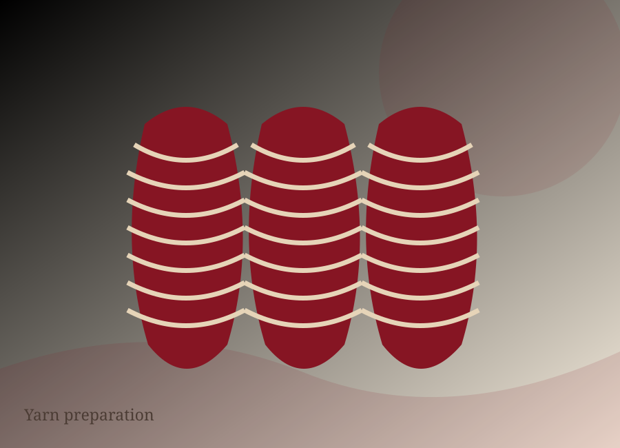
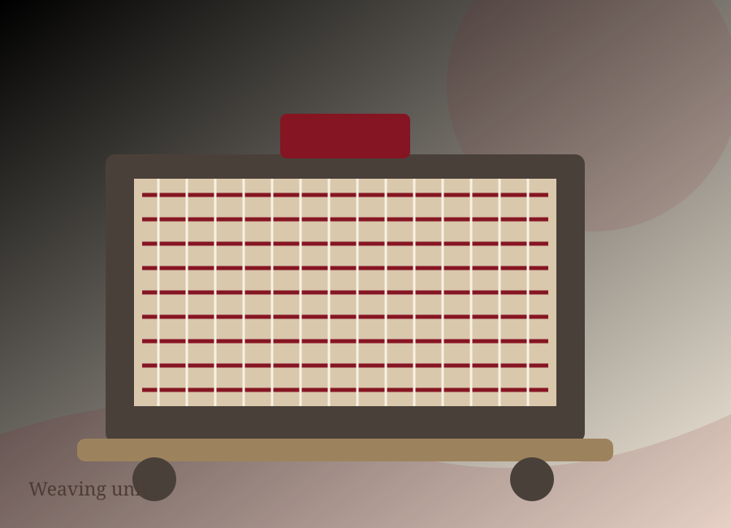
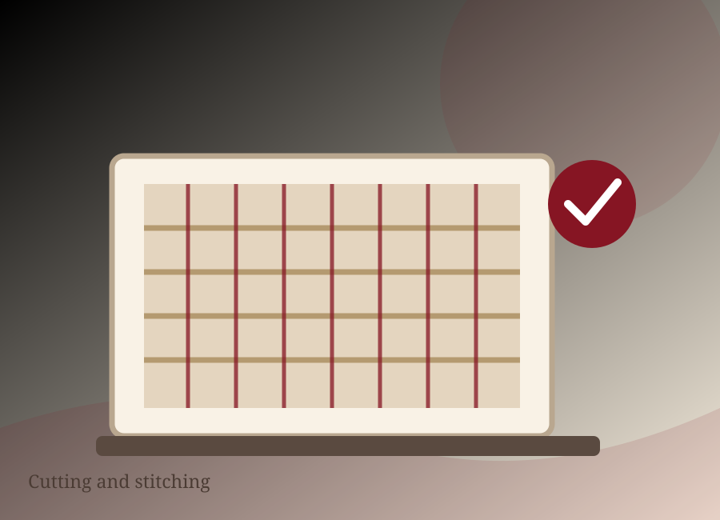
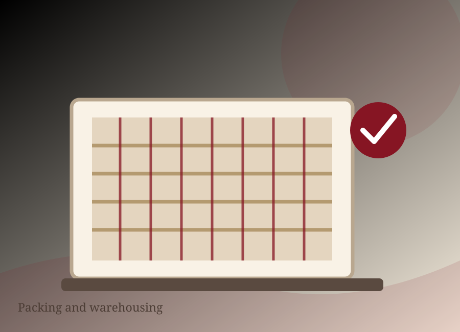
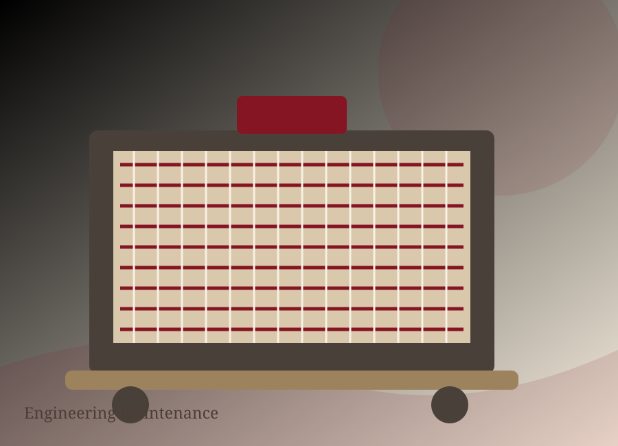

01 / YARN DYEING
Yarn preparation
In-house cone dyeing produces quality dyed yarn and distinctive combinations of designs, with published capacity of 180,000 kg per month.
Founded in Faisalabad in 1989, Bismillah Textiles brings weaving, yarn dyeing, processing, embroidery, quilting, cutting and stitching together through vertically integrated operations.

Our published manufacturing profile describes an integrated route from yarn and fabric formation through processing, made-ups and finished packing.

In-house cone dyeing produces quality dyed yarn and distinctive combinations of designs, with published capacity of 180,000 kg per month.

136 air-jet looms support more than one million metres per month across jacquard, matelassé, dobby, plain and other fabrics from 120 to 600 thread count.
Two continuous bleaching ranges and two continuous dyeing ranges support customer-defined fabric programmes.
Three rotary printing machines support printed fabric development within the processing house.
High-speed, multi-needle embroidery machinery supports detailed designs up to 400 × 1,200 mm alongside finishing operations.

18 stitching units provide modern cut-to-pack capability of more than four million metres per month.

In-house quality and process controls are applied across production with experienced technicians and modern production technology.

18 single-needle computerized quilters and two multi-needle continuous machines support up to 500,000 metres quilted per month; wadding exceeds 175,000 kg per month.

Weaving, processing and stitching work together under one roof, connecting each finished textile to the people, machines and checks behind it.
Published capacities describe the company’s integrated manufacturing profile; final programme capacity and availability should be confirmed for each enquiry.
More than one million metres of installed weaving capacity per month.
Processing and cut-to-pack capability reported at more than four million metres per month.
Made-up product conversion from cutting through packing.
A skilled team across Bismillah Textiles’ operations.